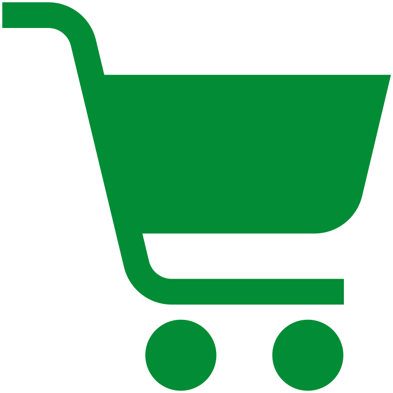
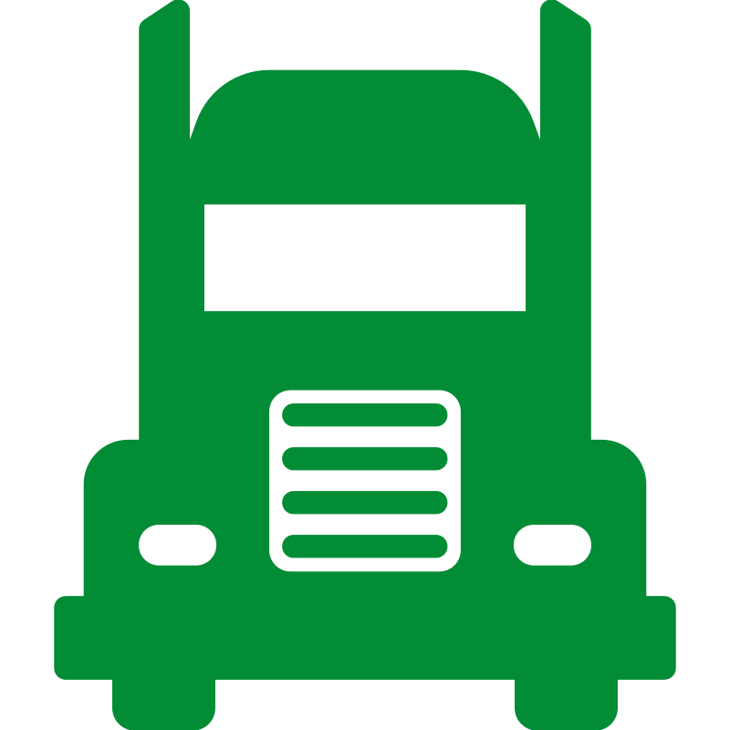
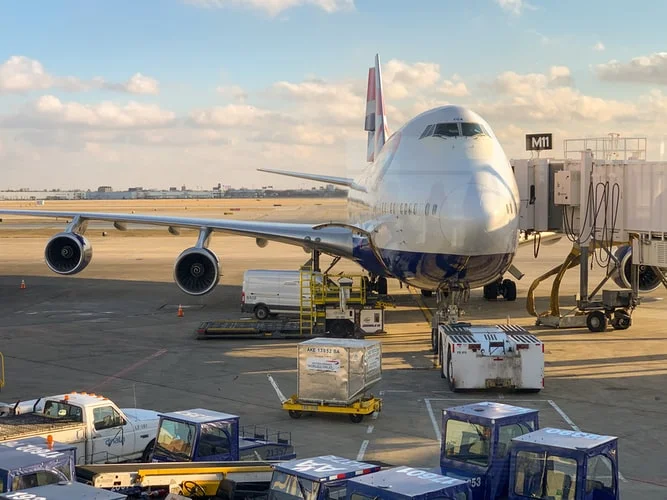
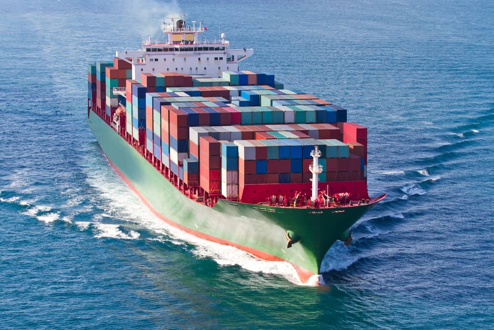
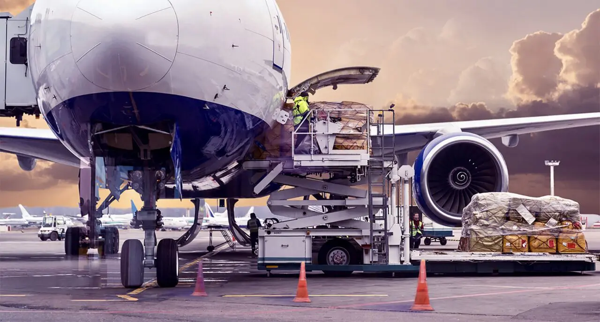
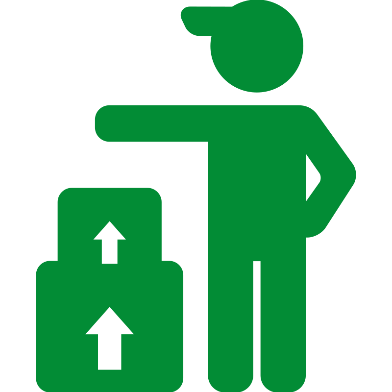
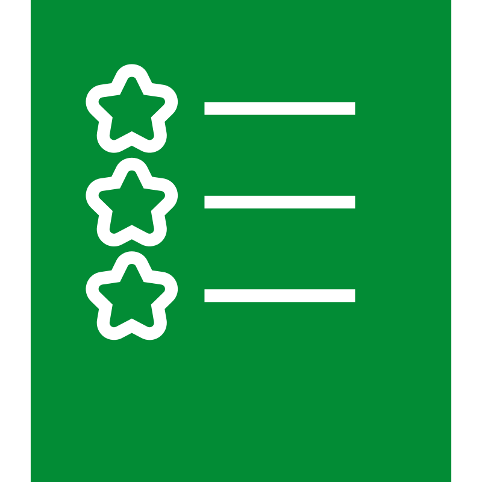

Prendre un rendez-vous
Nous fournissons les meilleurs services
Chez GRAND OUEST FRET SERVICES NOUS VOUS PROPOSONS UNE LARGE GAMME DE SERVIVES
FRET AÉRIEN
Le transport de fret aérien est le moyen le plus rapide d'expédier des marchandises à l'international. Confiez-nous vos colis pour une livraison rapide.
FRET MARITIME
Pour vos gros envois de colis vers le Cameroun GRAND OUEST FRET SERVICES vous propose un service de livraison de qualité

FRET ACHAT
Pour vos achats en France et en Europe, GRAND OUEST FRET SERVICES s' engage à acheté votre marchandise et la livré au Cameroun .

DÉMÉNAGEMENT
Pour vos déménagements en île de France faites confiance à grand ouest fret services pour un déménagement de qualité.
Grand Ouest Fret Services est leadeur dans le transit entre la France et le Cameroun
Chez grand ouest fret services la satisfaction de nos clients est notre priorité nous vous offrons des services de qualité nous venons récupérer vos gros colis à domicile et nous vous livrons à domicile au Cameroun. Notre équipe dynamique est à votre disposition de lundi à samedi
- Efficacité
- Fiable et expérimenté
- un travaille de qualité
- Services garantie


Fret Maritime
Grand ouest fret services mets des gros moyens pour satisfaire un bon transport maritime de vos colis au Cameroun et aussi du Cameroun pour la France.
CONTACTEZ-NOUSFret Aerien
Pour un envoi plus rapide de vos petits colis au Cameroun, faites nous confiance.
JOUEZ LA VIDEO
Comment fonction le service de fret
Expertise Logistique France-Cameroun, votre pont de confiance.

Planification et Ramassage
Un créneau horaire est défini ensemble pour la récupération de vos colis à l'adresse de votre choix
01
Transit Logistique
Une fois collectés, vos envois sont pris en charge par nos équipes pour un acheminement optimise.
02
Remise Finale
Nous assurons une livraison à domicile ("Doot-to-Daor) avec une notification systématique dés la réception du colis.
03

Votre avis compte
Une fois la livraison effectuee, partagez votre experience, votre satisfaction est notre meilleure publicite et nous aide a nous ameliorer.
04
Gagnez du temps grace a nous
Nadège
Shella
Rodrigue